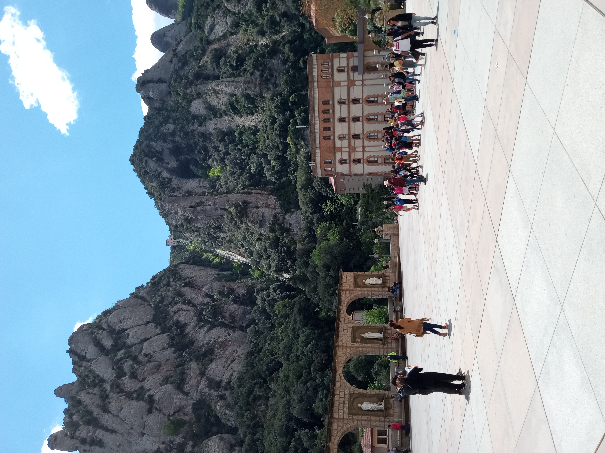
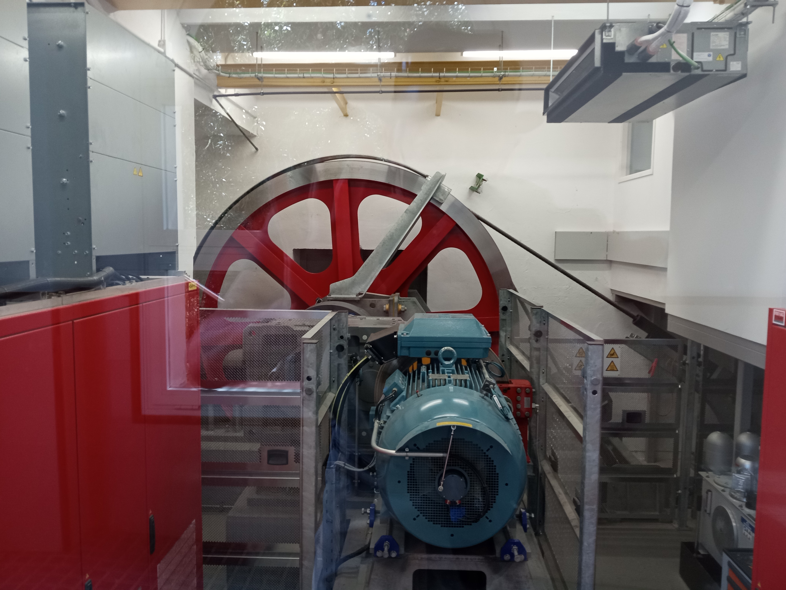
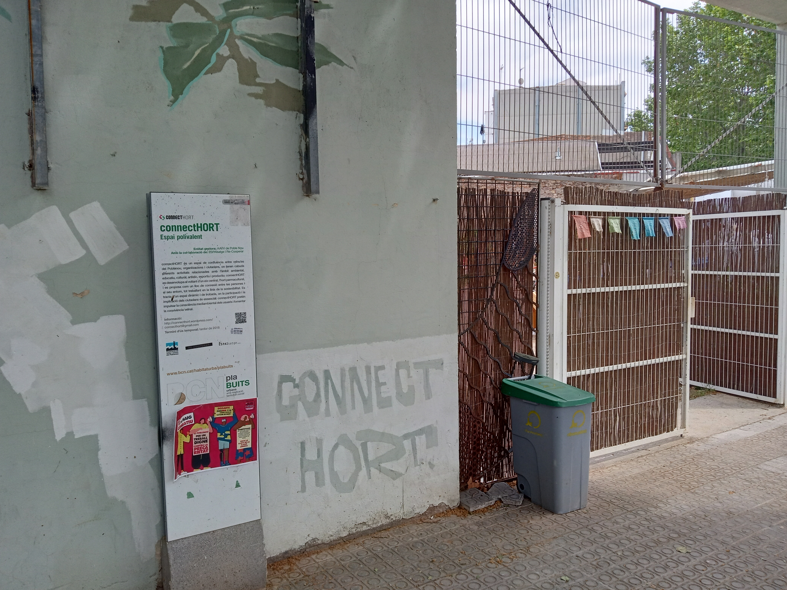
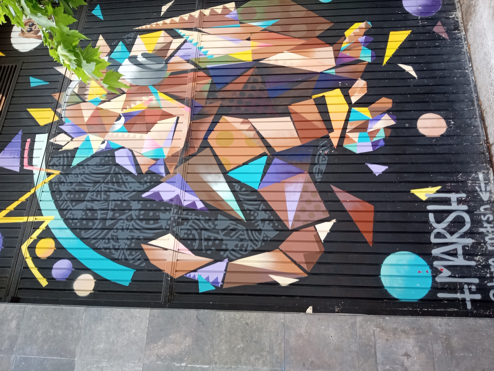

Week 7: 2/5/2022 - 8/5/2022¶
Holy crap! It’s already week 7! This week starts the architecture festival that I am interested in and Bente is here to do museums and other art stuff with Dawn. We also have the cooking class through SAE on Tuesday and our Perfume class on Saturday from 10:00 - 14:00.
2/5/2022 Monday¶
Mostly a class day today. Small attendance due to two groups of students not being able to get back from weekend trips in time. Dawn and Bente went to Casa Batllo with an early entrance time. I picked up bread at Origo while we had lunch at We Love Italy. Afterwards Bente joined us at our apartment for dinner and chat. Nice evening.
3/5/2022 Tuesday¶
While I did my music class Dawn and Bente went to the Sagrada Familia. It was a cloudy day so the light through the windows at the Sagrada Familia was much less lovely. Later we headed back to Catalunya to meet the class for our cooking class at Cook and Taste which is tucked in behind the Cathedral. The cooking experience was lovely and Carlos was a wonderful and informative host. I’ll link the recipes but everybody got involved and we made Creme Catalana for dessert, Salmorejo which is a version of gazpacho and tastes like a wonderful tomatoe soup, a tortilla (eggs, onions, potatoes), and a rich paella. Here are a few of the images…..
4/5/2022 Wednesday¶
Dawn and Bente went to the Picasso Museum this morning while I taught the Astronomy class. Some student concerns needed addressing so got that process started. Spanish class was fun as it often is in my class. Afterwards we walked up Passeig de Gracia from the Spanish school to meet Bente at the Fontana metro station. Not a long walk and interesting to feel Passeig de Gracia change from a wide rambla to a narrow street. Still lots of high end stores but definite character change. Met Bente at Fontana and went back to Clot where we ate at La Clote de Clot which is a lovely family restaurant near the Mercat de Clot on Carrer de Clot. Lots of Clots there! Food was tasty with real vegetarian options and cheerful staff. I had a long ‘conversation’ with one of their ‘regulars’ who must hang out having beers pretty regularly. Andres spoke many languages and had lots to discuss about the need to listen first and speak last when learning languages, the value of latin in understanding the languages of Europe, the critical importance of language in facilitating communication, and his cool car that has no doors or windows or reverse gear that he drives around. Dawn noticed the staff being amused by our interaction but it wasn’t aggravating through if we go back and have the same conversation it will quickly get old. Got Bente to the metro and she found her way home.
5/5/2022 Thursday¶
Miro and PNAC
Today started with Dawn and Bente heading up to Montjuic to visit the Miro Museum. I had a meeting with Rich K near the Universidad de Barcelona. Hadn’t ever stopped at this point on L1. Thankfully even though we met at Starbucks he didn’t choose that for our meeting. Had a good chat and found out about his book project which I am very intrigued by. The book is called ‘[Like a Fish in Water]’ and is a set of activities and guides to maximizing the impact and success of a study abroad experience. The book is due to be released May 31 and I am excited to read it with the benefit of hindsight.
After meeting with Rich (I really like his perspective on the program and his overall professionalism) I scurried back to Montjuic to connect up with Dawn. We met at the museum and then wandered down towards the PNAC (Palau Nacional de Arte Catalunya). Along the way we walked through the Jardins de Laribal which are very beautiful and Dawn and I may try to get back and explore them more. They extend up and down the hillside a fair ways with interesting features that we did not have time to explore today. As we walked through the gardin and down the path to PNAC we looked again in to the garden area in the bottom of what might be an old quarry pit. Made a mental note to go back and visit during the week.
At PNAC we expecting it to be a relatively quick visit with little that would interest us. Mostly due to the grand classical exterior it seemed like the collection might easily be lots of old white guys staring out of dark background framed in gold. We choose to visit the modern part of the collection and were delighted to find that it was extensive and well curated. Really nice and we were very glad we had visited. We spend 90 min or so wandering through the two large galleries on the upper floors. There was also a special exhibit that was also very nice. All in all definitely worth it - we recommend. We did not visit the older works and can’t comment on them.
As we exited we were amused to see that it had started raining hard enough that we would get pretty wet walking down the Magic Fountain. Instead we went back to the cafe and had coffee and snacks while we waited for the rain to abate. We have come to totally mistrust the weather predications for Barcelona. They rarely seem to get it right when there is rain in the forecast and it can change dramatically during the day (the projection). This delay gave us a chance to admire the dramatica space within the building which you would have thought was due to a history as a church. Not so much - it was built in 1929 for an exhibition which is why it is so grand but it is relatively modern in that sense. The lofty interior spaces have mostly been filled with interior wall that wrap around the large columns from the original building. The main room where one cafe is seems dramatic and huge but would be incredibly noisy with any reasonable number of people in it. The rain slowed to a light mist and we headed down the fountain and back to our rooms feeling like we had good experiences during the day.
6/5/2022 Friday¶
One of the visits on Bente’s list was Montserrat. Seemed totally reasonable and we were curious how it would seem a second time. We certainly got our tickets more smoothly and knew the ropes a bit. We aimed for the 9:30 train and with tourists flowing back into Barcelona we should have expected it to be crowded. We did have seats on the way out to Montserrat but Dawn stood the whole way back and I had to stand for half the trip. Wow.
Another lovely day at Montserrat. We opted to start by taking the funicular to the top of the mountain (not quite the top for a good ways up) and then walking along the trails. Some have suggested this isn’t worth it but we definitely thought it was. Still lots of potential up and down but many more choices than just walking out from the monastery and you’re already high enough to have good views the whole time. For perspective the first image is the funicular route and the second is the drive wheel and motor at the top (for personal reference). The motor is actually a good bit bigger than I would have expected because the two cars are balanced at either end of the cable and one only has to ‘carry’ the 15 or so people riding.
Route of Sant Joan Funnicular

Drive Wheel and Motor for Sant Joan Funnicular

As we walked along the first trail we could see the ruins of the Ermita de Sant Onofre in the distance. The smooth rounded rocks and the ruins tucked into them would be perfectly at home in Canyonlands or Zion except for the color of the rock. This image will give you a sense of that.

I am never sure whether the inside of these mountain chapels will be in ruins like the exterior or at least modestly maintained. So far they have all been very nice inside in a humble mountain chapel sort of way. Dramatically different than the appalling ornateness of the churchs.
Montain Chapel

It is fascinating to speculate what would lead someone to constuct this building in the 16th century so far from the support systems for food and other materials that would be needed. You can see where channels have been carved into the rocks to guide water to the building and other grooves carved out to accept the top edge of the roof tiles which sprang out from the rock and covered the building. The short tunnel out the other end and the narrow path to the stair well up to the next higher sanctuary affirms how small these folks must have been physically compared to me. Practically had to go on my knees to avoid hitting my head and also nearly had to take my small backpack off to get through width wise. Wow. One wonders if the residents 500 years ago found this view uplifting as we might or saw it as an indicator of the slog to carry supplies to their home. Gotta wonder….
The view from Ermita de Sant Onofre

We explored a number of other trails and if we go back we have a good sense of where we might go for a longer walk. If money were no object it would be fun to stay at the hotel at Montserrat and start one’s day hikes earlier and end them later. The artists spent a little time practicing their craft and were captured in the act.
Artists at work!

We opted to leave around 3 or so which got us back to Barcelona and home close to 6:30. Good day and in spite of thinking we had been walking mostly on the flat both Bente and my knees and other joints let us know we had been doing more than we thought.
7/5/2022 Saturday¶
ConnetHort and IAAC 
8/5/2022 Sunday¶
Today we all walked over to the Parc del Estacio de Nord to explore the ombu trees again and look for other potential drawing places. Had some chores to do this morning and a bit of a late night last night so didn’t set out until 11:00 or so. Stopped for coffee at Three Marks near the kettlebell gym. Nice but bit more expensive than usual. On the other hand it’s Sunday and lots of the normal places aren’t open. After exploring around looking for other possible drawing sites I took off to Poblenou for the Solar Brunch that was part of the Model festival. This event was hosted at ConnectHort (the urban garden space) where the CO-mida round table was held yesterday. Coming from a different direction I wandered through different streets on the way. One small rambla close to Marina was this one where the low guard rails were made from bent and welded rebar (seriously large stuff) and the many small planting baisins gave a nice feel that encouraged me to take a non-linear path through the space.
Rambla in Poblenou: note short rebar railings

Continuing on I crossed paths with a group of young women waiting on the sidewalk presumably for tickets to something at Razzamatazz. Seems like a big club but I’m not sure what they were waiting for as the staff were slowly setting up the panels for the lines later.
Across the street was a school called the Barcelona Technology School. Naturally I was intrigued and when I got to this point in my journal I looked it up. I can’t quite decide how I feel about this. After having conversations with the Master’s candidates at ConnectHort a little later in the day I feel like I’m getting a little curious about how these programs are developed and implemented. This tech school feels very trendy on it’s website and I wonder whether graduates are really getting the employment they want after completing the program. Go look for yourself and see what you think. I realize that part of this is a bias on my part that contrasts programs for a Masters in Science with these 9 month or 18 month programs. Some definite issues on my part that I should probably discuss in therapy.
Along this path to ConnectHort I was struck again by some of the very lovely street art on doors and walls. The first below is also by the same artist that did the art on the FX Animation school door. The detail shows the subtle gray on black work in the negative space that was lovely. The second is another block down the way and way being worked on as I walked by on Saturday.
Street Art in Poblenou

Detail of Street Art in Poblenou

Street Art in Poblenou

Arrived at ConnectHort to find various demos being set up to demonstrate the novel materials. Nothing actually particularly novel but that’s because a focus of the program is to explore existing and older technologies in our modern context and understand how they might apply. The presentations were from Masters students at IAAC who were illustrating some of their investigations for this lunch. The language of the workshop turned out to be English since the students and visitors were mostly from all over and English was a language they had in common. All spoke better English than my Spanish which is aggravating. One talked about her work on the vertical garden, one talked about the solar ovens, and Kris talked about minimizing power use through his lo<-tech newsletter and website. More about that later.
Throughout the demo projects they were using very small (30 cm x 20 cm) solar panels to power everything. Probably got a good deal on them somewhere. No surprise that you can connect a voltage regulator to hold the output voltage at 5 V into a USB port for charging phones. Works great because the charge management is entirely onboard the phone. Similarly powering amplifiers for speaker systems takes a little more current but two panels in parallel provides enough current. When the sun goes behind a cloud the volume goes down which makes you very aware of the sun. A good thing. The most surprising demo was running a soldering iron on a single panel. No regulator just hardwire to the panel. Pretty low power but the soldering iron did get hot enough to manage small solder joints that could repair circuit board issues if they were small enough. Not going to desolder any big lugs with this but I was definitely surprised that it worked at all.
Soldering with Sunshine:

The lunch was lovely and I had several conversations with folks as I realized that they are trying to address the many related issues in a search for a different relationship between citizens and their energy use. I suggested that they look into the Gaviotas project in Columbia as another appropriate tech sort of model.
I was amused that they were using the large water bottles people buy around here as cloches for their young tomatoe plants. Not a frost issue but rather just keeping temperature and humidty higher to improve growth.
Tomatoe Cloches:

Returning now to Kris’s project with low power solar driven tech. As I mentioned earlier a key project for him was the Lo<-Tech Newsletter website. His point, that many readers miss, is to reduce power consumption as much as possible while accepting that there will be ocassional periods when the battery runs down and the website goes down. Currently it is up and serving users 95% of the time and only really goes down when it rains for a week straight in the winter. He could resolve this with bigger panels or batteries but that misses the point. Along with the enormous lo tech resources on his webpage here is the Hackaday post that links to the technical implementation details. In reading more about the history of this project it becomes apparent that Kris has been at this low tech/low power education effort for some time. I will need to definitely take some time to explore the website more thoroughly.
The other thing I got to ask a number of the students in the Master’s program was how they found the IAAC Masters programs and why the chose it. All of these students were (I think) in the MDEF (Masters in Design for Emergent Futures) program. IAAC has been around for some time but these particular programs are relatively recent. Each of the students had some background in some part of the design industry, whether graphic design or interior design, but felt stuck and was looking for a change of focus. This program appealed to them and it is a relatively loosely defined program. It has some overtones of Evergreen College in the sense that the success of the program requires good student motivation but also allows and supports the pursuit of personally interesting ideas. Paula, from Mexico, worked on the vertical garden project in part and was able to describe very effectively the ceramic printer (essentially a robot arm with an extruder on it) that was used to make the individual plates for the project. Another student from California found IAAC in sort of the same way and found it was opening her up to thinking about things in new ways. She was very interested in the concepts of physics and how they might affect her thinking. She is Korean American (I can remember that but not her name? - what an idiot) and has a perspective influenced by past practice in Buddism. All in all a good experience and good food to boot though they did run out of feeding utensils except for knives.
Wandered home up the same street as ConnectHort and ended up at the Glories metro stop just across from the Mercat Encants where the Tram stops. Along the way saw a LEED building that had been covered in very thick cork to provide insulation in the remodel.